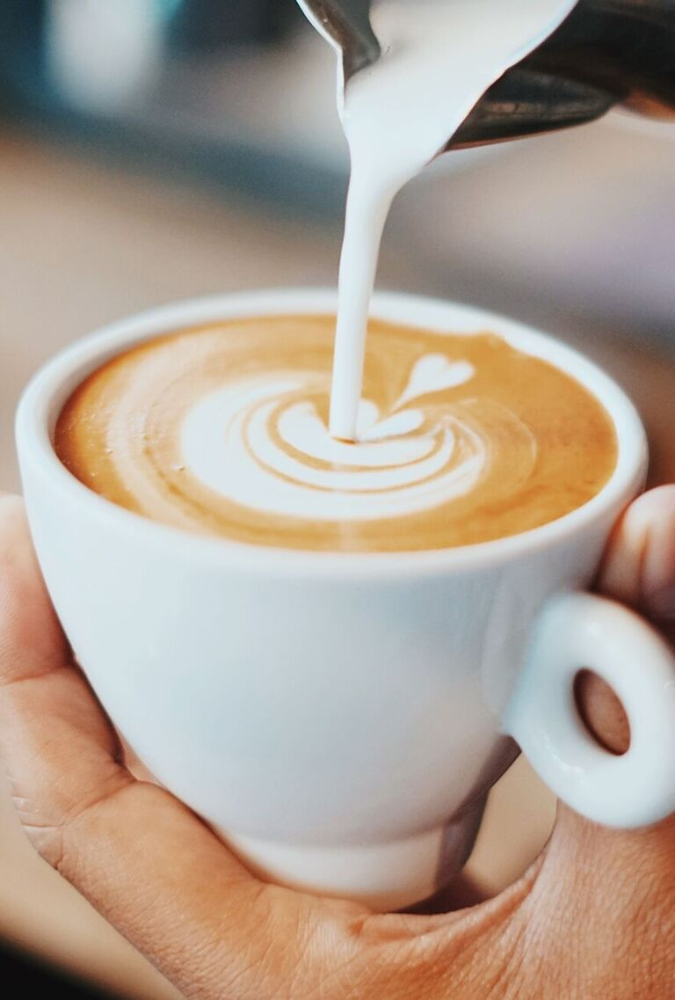

- 30 секунд прогреть бокал горячей водой, слить.
- Положить сахар, там где он есть.
- Залить алкогольные ингредиенты в бокал.
- Добавить кофе до уровня ниже 20 мм края бокала.
- Тщательно размешать.
- Аккуратно выложить на кофе сливки, добиться чёткого визуального контраста слоёв.
